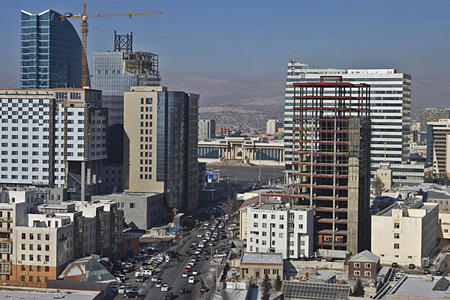

Construction
In 1989, the construction sector produced over 10 percent of the Gross Domestic Product. Although the construction sector was stagnant during the transitional period, it has started to gradually grow since 1995. A "Master plan to develop the construction sector to 2010" was prepared with the ultimate goal of further developing this sector to international standards, and of providing the population with adequate housing. Within this framework, major construction projects are being implemented to build housing apartment complexes.
In 2005, construction companies performed construction and capital repair works 175.9 billion togrog worth, up 8.9 percent from the previous year. Furthermore, construction funds of 50.1 billion togrog were launched.
In 2005, 144 contsruction works were completed, including 81 housing objects with 227 thousand square meters area (2.7 thousand apartments), 23 trade and service centres (46.4 thousand square meters), 6 hotels and cafeteria (1.6 thousand square meters), 3 objects with inductrial purposes (3.0 thousand square meters).
Asphalt roads with 389.4 kilometers length and total cost of 22.0 billion togrogs were financed by the state budget, while non-asphalt roads with 746.9 kilometers length and total cost of 3.2 billion togrogs were funded by foreign investment resources.
In recent years, the intensive centralization of the population of Mongolia has influenced directly on the increasing demand and price of apartments. Although, there are several ongoing programs and projects designed to meet the needs, they can not outdo the ever increasing apartment demand. At present, 1200 construction companies with the workforce of 48 thousand people, are operating in the territory of Mongolia.
Out of the total 198 buildings with the finance of 200 billion MNT, which were constructed in 2006, 102 were apartment buildings. In 2006, by the decision of the State Land Authority, the ownership of 16.5thousand hectares of land has been shifted to 146.4 thousand citizens. Moreover, the Government of Mongolia plan to issue common stock worth 90 billion MNT, which will be traded on the Mongolian Stock Exchange.
(Source: Bank of Mongolia)